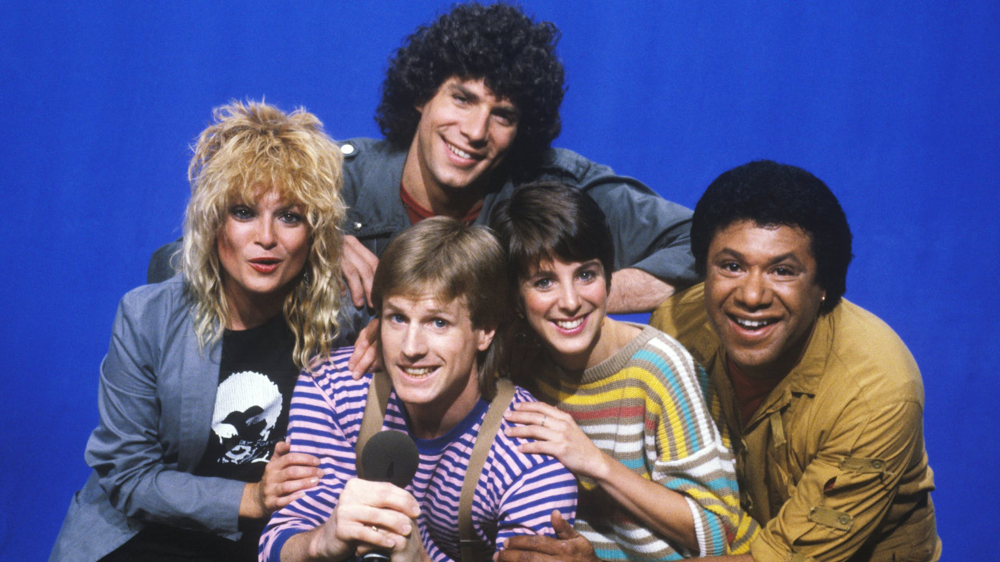
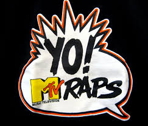

History of MTV
On Saturday, August 1st, 1981, at 12:01am Eastern Time, MTV was officially launched. The first words spoken were, "Ladies and Gentlemen, Rock and Roll!" This was spoken by John Lack and was played over footage of the actual space shuttle launch countdown of Columbia and Apollo 11. MTV originally wanted to use Neil Armstrong's "One Small Step" quote but he refused to allow them to use it. The first music video that ever played on MTV was The Buggles' "Video Killed the Radio Star". After that, the next video to follow was Pat Benatars' "You Better Run". MTV's effect was immediate in the areas where the channel was carried. MTV's audience was most popular among the 12 - 24 year olds. A study showed that the average person that age, would watch MTV on an average of 30 minutes up to 2 hours per day.

The original purpose of MTV was to be "music television", playing music videos 24/7, guided by on-air personalities known as VJs, or video jockeys. The original slogans of the channel were "You'll never look at music the same way again", and "On cable. In stereo."
Fresh-faced young men and women were hired to host the channel's programming and to introduce music videos that were being played. The term VJ was coined, which was a play on the initialism DJ (disc jockey). Many VJs eventually became celebrities in their own right. The original five MTV VJs in 1981 were Nina Blackwood, Mark Goodman, Alan Hunter, J.J. Jackson and Martha Quinn. The VJs were hired to fit certain demographics the channel was trying to obtain (Goodman was the affable every man, Hunter the popular jock, Jackson the hip radio veteran, Blackwood the bombshell vixen and Quinn the girl next door). Due to the uncertainty of how successful the channel would be, the VJs were told not to buy permanent residencies and to keep their second jobs.The VJs recorded intro and outro voiceovers before broadcast, along with music news, interviews, concert dates and promotions. These segments appeared to air live and debut across the MTV program schedule 24 hours a day and seven days a week, although the segments themselves were pre-taped within a regular work week at MTV's studios.

In 1982 The channel's iconic "I want my MTV!" advertising campaign was launched. What would really sell the campaign, however, was the delivery: MTV exec Les Garland would cajole his friend Mick Jagger of the Rolling Stones to shout the line into a camera. Once Jagger finally agreed to do it, David Bowie and Pete Townshend of the The Who were persuaded to film spots as well. After that, getting new stars to join in snowballed into the famous "I Want My MTV!" commercials. The spots were a hit with cable providers, and subscriptions soared.

In 1984, the channel produced its first MTV Video Music Awards show, or VMAs. The first award show, in 1984, was punctuated by a live performance by Madonna of "Like A Virgin". The statuettes that are handed out at the Video Music Awards are of the MTV moonman, the channel's original image from its first broadcast in 1981. Presently, the Video Music Awards are MTV's most watched annual event. MTV began its annual Spring Break coverage in 1986, setting up temporary operations in Daytona Beach, Florida, for a week in March, broadcasting live eight hours per day. The channel later expanded its beach-themed events to the summer, dedicating most of each summer season to broadcasting live from a beach house at different locations away from New York City, eventually leading to channel-wide branding throughout the summer in the 1990s and early 2000s such as Motel California, Summer Share, Isle of MTV, SoCal Summer, Summer in the Keys, and Shore Thing. MTV VJs hosted blocks of music videos, interview artists and bands, and introduced live performances and other programs from the beach house location each summer.

In the 2000s, as the channel reduced its airtime for music videos and eliminated much of its in-house programming, its annual summer-long events came to an end. MTV had debuted Dial MTV in 1986, a daily top 10 music video countdown show for which viewers could call the toll-free telephone number 1-800-DIAL-MTV to request a music video. The show was replaced by MTV Most Wanted in 1991, which ran until 1996, and later saw a spiritual successor in Total Request Live. The phone number remained in use for video requests until 2006. Another late night music video show was added in 1987, Headbangers Ball, which featured heavy metal music and news. Before its abrupt cancellation in 1995, it featured several hosts including Riki Rachtman and Adam Curry. A weekly block of music videos with the name Headbangers Ball aired from 2003 to 2011 on sister channel MTV2, before spending an additional two years as a web-only series on MTV2's website, until Headbangers Ball was discontinued once again in 2013. Mark Goodman and Alan Hunter departed the network in 1987. In 1988, MTV debuted Yo! MTV Raps, a hip hop/rap formatted program. The program continued until August 1995; it was renamed to simply Yo! and aired as a one-hour program from 1995 to 1999. In 1989, MTV began to premiere music-based specials such as MTV Unplugged, an acoustic performance show, which has featured dozens of acts as its guests and has remained active in numerous iterations on various platforms for over 20 years.